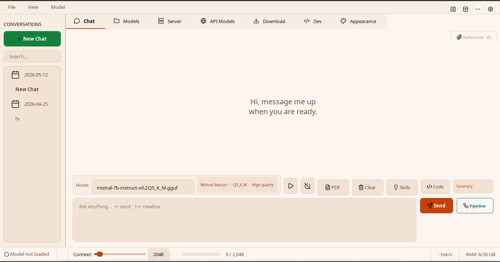
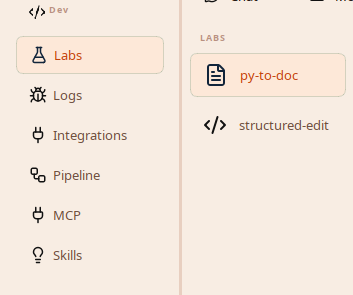
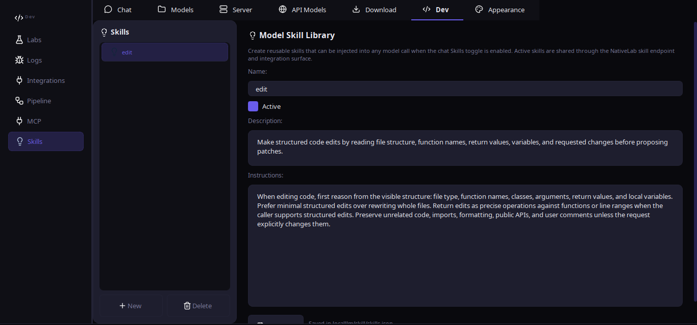
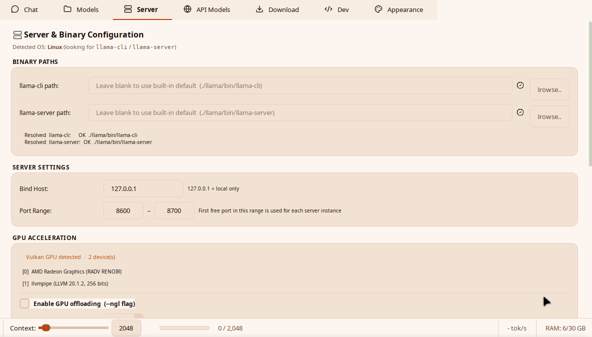

AI Pipeline Builder
Generate validated pipeline JSON from a plain-English request, then load it for testing.
new

Feature catalogue - v0.3.7
NativeLab covers the full loop: install a runtime, register models, chat, attach documents, build pipelines, run Labs, expose endpoints, and script the same engine from a terminal.
Latest
v0.3.7 adds AI-assisted pipeline generation, native pipeline helper paths, sidebar resizing, centralized LLM error dialogs, and refreshed first-run setup flows.
Generate validated pipeline JSON from a plain-English request, then load it for testing.
C/Rust acceleration for deterministic graph, validation, prompt, sampler, and detection hot paths.
Hardware-aware, resumable setup with llama.cpp or HF Transformers backend choices.
MainWindow split, centralized QThread cleanup, context meter, and plain-language LLM errors.
App surfaces
Every surface routes through shared runtime state so model loading, context, API profiles, and saved pipelines stay consistent.

Labs, logs, integrations, pipelines, MCP, and skills live behind Developer Mode.

Shared skill injection plus drop-in Labs panels using one endpoint API.

llama.cpp paths, context, GPU offload, ports, and backend-specific settings.
Core capabilities
The full technical details live in the project docs, but these are the surfaces most users touch first.
CLI
The CLI can chat, load models, run saved pipelines, inspect endpoints, manage skills, run Labs helpers, and serve integration routes.
$ nativelab --cli Chat / Models / API Models / Skills / Labs / Pipelines / Integrations / Status / Setup $ nativelab --cli pipeline run research-synthesis --file prompt.txt $ nativelab --cli endpoint /snapshot --json